<!DOCTYPE HTML>
<html lang="">

<head><meta name="generator" content="Hexo 3.8.0">
    <!--Setting-->
    <meta charset="UTF-8">
    <meta name="viewport" content="width=device-width, user-scalable=no, initial-scale=1.0, maximum-scale=1.0, minimum-scale=1.0">
    <meta http-equiv="X-UA-Compatible" content="IE=Edge,chrome=1">
    <meta http-equiv="Cache-Control" content="no-siteapp">
    <meta http-equiv="Cache-Control" content="no-transform">
    <meta name="renderer" content="webkit|ie-comp|ie-stand">
    <meta name="apple-mobile-web-app-capable" content="William&#39;s 隨手札記">
    <meta name="apple-mobile-web-app-status-bar-style" content="black">
    <meta name="format-detection" content="telephone=no,email=no,adress=no">
    <meta name="browsermode" content="application">
    <meta name="screen-orientation" content="portrait">
    <meta name="theme-version" content="1.2.3">
    <meta name="root" content="/">
    <link rel="dns-prefetch" href="http://a10000005588.github.io">
    <!--SEO-->

<meta name="keywords" content="Golang">


<meta name="description" content="以下為學習本課程 Pluralshight: The Go CLI Playbook 所記錄的筆記，了解Golang本身所提供的指令集工具要如何使用
https://app.pluralsigh...">


<meta name="robots" content="all">
<meta name="google" content="all">
<meta name="googlebot" content="all">
<meta name="verify" content="all">
    <!--Title-->

<title>
    
    Go CLI Playbook 學習筆記 |
    
    William&#39;s 隨手札記
</title>

<link rel="alternate" href="/atom.xml" title="William&#39;s 隨手札記" type="application/atom+xml">


<link rel="icon" href="/favicon.ico">

    

<link rel="stylesheet" href="/css/bootstrap.min.css?rev=3.3.7">
<link rel="stylesheet" href="/css/font-awesome.min.css?rev=4.7.0">
<link rel="stylesheet" href="/css/style.css?rev=@@hash">
    

</head></html>
<!--[if lte IE 8]>
<style>
    html{ font-size: 1em }
</style>
<![endif]-->
<!--[if lte IE 9]>
<div style="ie">你使用的浏览器版本过低，为了你更好的阅读体验，请更新浏览器的版本或者使用其他现代浏览器，比如Chrome、Firefox、Safari等。</div>
<![endif]-->
<body>
    <header class="main-header">
    <div class="main-header-box">
        <a class="header-avatar" href="/" title="William L.K.">
            
        </a>
        <div class="branding">
            <!--<h2 class="text-hide">Snippet主题,从未如此简单有趣</h2>-->
            
            <h2>
                Just Code It.
            </h2>
            
        </div>
    </div>
</header>
    <nav class="main-navigation">
    <div class="container">
        <div class="row">
            <div class="col-sm-12">
                <div class="navbar-header"><span class="nav-toggle-button collapsed pull-right" data-toggle="collapse" data-target="#main-menu" id="mnav">
                        <span class="sr-only"></span>
                        <i class="fa fa-bars"></i>
                    </span>
                    <a class="navbar-brand" href="http://a10000005588.github.io">
                        William&#39;s 隨手札記</a>
                </div>
                <div class="collapse navbar-collapse" id="main-menu">
                    <ul class="menu">
                        
                        <li role="presentation" class="text-center">
                            <a href="/"><i class="fa "></i>
                                最新貼文串</a>
                        </li>
                        
                        <li role="presentation" class="text-center">
                            <a href="/programming"><i class="fa "></i>
                                程式語言筆記</a>
                        </li>
                        
                        <li role="presentation" class="text-center">
                            <a href="/backend/"><i class="fa "></i>
                                Web後端工程</a>
                        </li>
                        
                        <li role="presentation" class="text-center">
                            <a href="/tools/"><i class="fa "></i>
                                工具使用</a>
                        </li>
                        
                        <li role="presentation" class="text-center">
                            <a href="/blockchain/"><i class="fa "></i>
                                區塊鏈</a>
                        </li>
                        
                        <li role="presentation" class="text-center">
                            <a href="/archives/"><i class="fa clock"></i>
                                貼文軌跡</a>
                        </li>
                        
                        <li role="presentation" class="text-center">
                            <a href="/about/"><i class="fa "></i>
                                關於我(=´ᴥ`)</a>
                        </li>
                        
                    </ul>
                </div>
            </div>
        </div>
    </div>
</nav>
    <section class="content-wrap">
        <div class="container">
            <div class="row">
                <main class="col-md-8 main-content m-post">
                    <p id="process"></p>
<article class="post">
    <div class="post-head">
        <h1 id="Go CLI Playbook 學習筆記">
            
            Go CLI Playbook 學習筆記
            
        </h1>
        <div class="post-meta">
    
    <span class="categories-meta fa-wrap">
        <i class="fa fa-folder-open-o"></i>
        
    </span>
    
    
    <span class="fa-wrap">
        <i class="fa fa-tags"></i>
        <span class="tags-meta">
            
            <a class="tag-link" href="/tags/Golang/">Golang</a>
            
        </span>
    </span>
    
    
    
    <span class="fa-wrap">
        <i class="fa fa-clock-o"></i>
        <span class="date-meta">
            2021/02/15</span>
    </span>
    
    
</div>
        
        
    </div>
    
    <div class="post-body post-content">
        <p>以下為學習本課程 <a href="https://app.pluralsight.com/library/courses/go-cli-playbook/table-of-contents" target="_blank" rel="noopener">Pluralshight: The Go CLI Playbook</a> 所記錄的筆記，了解Golang本身所提供的指令集工具要如何使用</p>
<p><a href="https://app.pluralsight.com/course-player?clipId=38b3a654-cbfd-436c-acb1-df088dfb5a48" target="_blank" rel="noopener">https://app.pluralsight.com/course-player?clipId=38b3a654-cbfd-436c-acb1-df088dfb5a48</a></p>
<h2 id="Go-Command-功能"><a href="#Go-Command-功能" class="headerlink" title="Go Command 功能"></a>Go Command 功能</h2><p>Go 的基本Command可以提供以下功能</p>
<ul>
<li>Building Application: 把<code>.go</code>檔案編譯成執行檔</li>
<li>Testing Application: 測試<code>.go</code>程式</li>
<li>Profiling Application: 效能測試</li>
<li>Managing Workspaces: 管理開發環境</li>
<li>Interacting with Environment: 與環境互動</li>
</ul>
<h3 id="Go-Command的列表"><a href="#Go-Command的列表" class="headerlink" title="Go Command的列表"></a>Go Command的列表</h3><p>在終端機下 <code>go</code> 指令，就會顯示go command的詳細資訊<br><figure class="highlight plain"><table><tr><td class="gutter"><pre><span class="line">1</span><br><span class="line">2</span><br><span class="line">3</span><br><span class="line">4</span><br><span class="line">5</span><br><span class="line">6</span><br><span class="line">7</span><br><span class="line">8</span><br><span class="line">9</span><br><span class="line">10</span><br><span class="line">11</span><br><span class="line">12</span><br><span class="line">13</span><br><span class="line">14</span><br><span class="line">15</span><br><span class="line">16</span><br><span class="line">17</span><br><span class="line">18</span><br><span class="line">19</span><br><span class="line">20</span><br><span class="line">21</span><br><span class="line">22</span><br><span class="line">23</span><br><span class="line">24</span><br><span class="line">25</span><br><span class="line">26</span><br><span class="line">27</span><br><span class="line">28</span><br><span class="line">29</span><br><span class="line">30</span><br><span class="line">31</span><br><span class="line">32</span><br><span class="line">33</span><br><span class="line">34</span><br><span class="line">35</span><br><span class="line">36</span><br><span class="line">37</span><br><span class="line">38</span><br><span class="line">39</span><br><span class="line">40</span><br><span class="line">41</span><br><span class="line">42</span><br></pre></td><td class="code"><pre><span class="line">➜ go</span><br><span class="line">Go is a tool for managing Go source code.</span><br><span class="line"></span><br><span class="line">Usage:</span><br><span class="line"></span><br><span class="line">        go command [arguments]</span><br><span class="line"></span><br><span class="line">The commands are:</span><br><span class="line"></span><br><span class="line">        build       compile packages and dependencies</span><br><span class="line">        clean       remove object files and cached files</span><br><span class="line">        doc         show documentation for package or symbol</span><br><span class="line">        env         print Go environment information</span><br><span class="line">        bug         start a bug report</span><br><span class="line">        fix         update packages to use new APIs</span><br><span class="line">        fmt         gofmt (reformat) package sources</span><br><span class="line">        generate    generate Go files by processing source</span><br><span class="line">        get         download and install packages and dependencies</span><br><span class="line">        install     compile and install packages and dependencies</span><br><span class="line">        list        list packages</span><br><span class="line">        run         compile and run Go program</span><br><span class="line">        test        test packages</span><br><span class="line">        tool        run specified go tool</span><br><span class="line">        version     print Go version</span><br><span class="line">        vet         report likely mistakes in packages</span><br><span class="line"></span><br><span class="line">Use &quot;go help [command]&quot; for more information about a command.</span><br><span class="line"></span><br><span class="line">Additional help topics:</span><br><span class="line"></span><br><span class="line">        c           calling between Go and C</span><br><span class="line">        buildmode   build modes</span><br><span class="line">        cache       build and test caching</span><br><span class="line">        filetype    file types</span><br><span class="line">        gopath      GOPATH environment variable</span><br><span class="line">        environment environment variables</span><br><span class="line">        importpath  import path syntax</span><br><span class="line">        packages    package lists</span><br><span class="line">        testflag    testing flags</span><br><span class="line">        testfunc    testing functions</span><br><span class="line"></span><br><span class="line">Use &quot;go help [topic]&quot; for more information about that topic.</span><br></pre></td></tr></table></figure></p>
<h3 id="可透過-go-help-可看到特定command的指令"><a href="#可透過-go-help-可看到特定command的指令" class="headerlink" title="可透過 go help 可看到特定command的指令"></a>可透過 <code>go help</code> 可看到特定command的指令</h3><p>假如要看go test的介紹，那就下這行指令 <code>go help test</code></p>
<figure class="highlight plain"><table><tr><td class="gutter"><pre><span class="line">1</span><br><span class="line">2</span><br><span class="line">3</span><br><span class="line">4</span><br><span class="line">5</span><br><span class="line">6</span><br><span class="line">7</span><br><span class="line">8</span><br><span class="line">9</span><br><span class="line">10</span><br><span class="line">11</span><br><span class="line">12</span><br><span class="line">13</span><br><span class="line">14</span><br><span class="line">15</span><br><span class="line">16</span><br><span class="line">17</span><br><span class="line">18</span><br><span class="line">19</span><br><span class="line">20</span><br><span class="line">21</span><br><span class="line">22</span><br><span class="line">23</span><br><span class="line">24</span><br><span class="line">25</span><br><span class="line">26</span><br></pre></td><td class="code"><pre><span class="line">➜ go help test</span><br><span class="line">usage: go test [build/test flags] [packages] [build/test flags &amp; test binary flags]</span><br><span class="line"></span><br><span class="line">&apos;Go test&apos; automates testing the packages named by the import paths.</span><br><span class="line">It prints a summary of the test results in the format:</span><br><span class="line"></span><br><span class="line">        ok   archive/tar   0.011s</span><br><span class="line">        FAIL archive/zip   0.022s</span><br><span class="line">        ok   compress/gzip 0.033s</span><br><span class="line">        ...</span><br><span class="line"></span><br><span class="line">followed by detailed output for each failed package.</span><br><span class="line"></span><br><span class="line">&apos;Go test&apos; recompiles each package along with any files with names matching</span><br><span class="line">the file pattern &quot;*_test.go&quot;.</span><br><span class="line">These additional files can contain test functions, benchmark functions, and</span><br><span class="line">example functions. See &apos;go help testfunc&apos; for more.</span><br><span class="line">...</span><br><span class="line">...</span><br><span class="line">...</span><br><span class="line"></span><br><span class="line">The test binary also accepts flags that control execution of the test; these</span><br><span class="line">flags are also accessible by &apos;go test&apos;. See &apos;go help testflag&apos; for details.</span><br><span class="line"></span><br><span class="line">For more about build flags, see &apos;go help build&apos;.</span><br><span class="line">For more about specifying packages, see &apos;go help packages&apos;.</span><br></pre></td></tr></table></figure>
<h2 id="go-env-查看環境變數"><a href="#go-env-查看環境變數" class="headerlink" title="go env 查看環境變數"></a><code>go env</code> 查看環境變數</h2><figure class="highlight plain"><table><tr><td class="gutter"><pre><span class="line">1</span><br><span class="line">2</span><br><span class="line">3</span><br><span class="line">4</span><br><span class="line">5</span><br><span class="line">6</span><br><span class="line">7</span><br><span class="line">8</span><br><span class="line">9</span><br><span class="line">10</span><br><span class="line">11</span><br><span class="line">12</span><br><span class="line">13</span><br><span class="line">14</span><br><span class="line">15</span><br><span class="line">16</span><br><span class="line">17</span><br><span class="line">18</span><br><span class="line">19</span><br><span class="line">20</span><br><span class="line">21</span><br><span class="line">22</span><br><span class="line">23</span><br><span class="line">24</span><br><span class="line">25</span><br></pre></td><td class="code"><pre><span class="line">&gt; go env</span><br><span class="line"></span><br><span class="line">GOARCH=&quot;amd64&quot;</span><br><span class="line">GOBIN=&quot;/Users/username/go/bin&quot;</span><br><span class="line">GOCACHE=&quot;/Users/username/Library/Caches/go-build&quot;</span><br><span class="line">GOEXE=&quot;&quot;</span><br><span class="line">GOHOSTARCH=&quot;amd64&quot;</span><br><span class="line">GOHOSTOS=&quot;darwin&quot;</span><br><span class="line">GOOS=&quot;darwin&quot;</span><br><span class="line">GOPATH=&quot;/Users/username/go&quot;</span><br><span class="line">GORACE=&quot;&quot;</span><br><span class="line">GOROOT=&quot;/usr/local/Cellar/go/1.10.2/libexec&quot;</span><br><span class="line">GOTMPDIR=&quot;&quot;</span><br><span class="line">GOTOOLDIR=&quot;/usr/local/Cellar/go/1.10.2/libexec/pkg/tool/darwin_amd64&quot;</span><br><span class="line">GCCGO=&quot;gccgo&quot;</span><br><span class="line">CC=&quot;clang&quot;</span><br><span class="line">CXX=&quot;clang++&quot;</span><br><span class="line">CGO_ENABLED=&quot;1&quot;</span><br><span class="line">CGO_CFLAGS=&quot;-g -O2&quot;</span><br><span class="line">CGO_CPPFLAGS=&quot;&quot;</span><br><span class="line">CGO_CXXFLAGS=&quot;-g -O2&quot;</span><br><span class="line">CGO_FFLAGS=&quot;-g -O2&quot;</span><br><span class="line">CGO_LDFLAGS=&quot;-g -O2&quot;</span><br><span class="line">PKG_CONFIG=&quot;pkg-config&quot;</span><br><span class="line">GOGCCFLAGS=&quot;-fPIC -m64 -pthread -fno-caret-diagnostics -Qunused-arguments -fmessage-length=0 -fdebug-prefix-map=/var/folders/3t/8jsg2cz52yn2glq8rk_9y7x40000gn/T/go-build760606218=/tmp/go-build -gno-record-gcc-switches -fno-common&quot;</span><br></pre></td></tr></table></figure>
<h2 id="go-run-執行程式"><a href="#go-run-執行程式" class="headerlink" title="go run 執行程式"></a><code>go run</code> 執行程式</h2><blockquote>
<p>注意，若要運程<code>go run</code>，需要在<code>$GOPATH</code>底下的<code>src</code>目錄進行</p>
</blockquote>
<p>運行一個包含main()方法的程式</p>
<figure class="highlight plain"><table><tr><td class="gutter"><pre><span class="line">1</span><br></pre></td><td class="code"><pre><span class="line">&gt; go run main.go</span><br></pre></td></tr></table></figure>
<h3 id="透過-go-run-race來偵測是否會有race-condition的狀況發生"><a href="#透過-go-run-race來偵測是否會有race-condition的狀況發生" class="headerlink" title="透過 go run --race來偵測是否會有race condition的狀況發生"></a>透過 <code>go run --race</code>來偵測是否會有race condition的狀況發生</h3><p>若目前有個使用<code>gorouting</code>的程式，若要偵測是否會發生race condition狀況，可以加上<code>-race</code>這個flag</p>
<figure class="highlight go"><table><tr><td class="gutter"><pre><span class="line">1</span><br><span class="line">2</span><br><span class="line">3</span><br><span class="line">4</span><br><span class="line">5</span><br><span class="line">6</span><br><span class="line">7</span><br><span class="line">8</span><br><span class="line">9</span><br><span class="line">10</span><br><span class="line">11</span><br><span class="line">12</span><br><span class="line">13</span><br><span class="line">14</span><br><span class="line">15</span><br><span class="line">16</span><br><span class="line">17</span><br></pre></td><td class="code"><pre><span class="line"><span class="keyword">package</span> main</span><br><span class="line"></span><br><span class="line"><span class="keyword">import</span> (</span><br><span class="line">	<span class="string">"fmt"</span></span><br><span class="line">	<span class="string">"sync"</span></span><br><span class="line">)</span><br><span class="line"></span><br><span class="line"><span class="function"><span class="keyword">func</span> <span class="title">main</span><span class="params">()</span></span> &#123;</span><br><span class="line">	<span class="keyword">var</span> wg sync.WaitGroup</span><br><span class="line">	<span class="keyword">for</span> i := <span class="number">0</span>; i &lt; <span class="number">10</span>; i++ &#123;</span><br><span class="line">		wg.Add(<span class="number">1</span>)</span><br><span class="line">		<span class="keyword">go</span> <span class="function"><span class="keyword">func</span><span class="params">()</span></span> &#123;</span><br><span class="line">			fmt.Println(i)</span><br><span class="line">			wg.Done()</span><br><span class="line">		&#125;()</span><br><span class="line">	&#125;</span><br><span class="line">&#125;</span><br></pre></td></tr></table></figure>
<p>若有race condition，go tool會產出報告來解釋<br><figure class="highlight plain"><table><tr><td class="gutter"><pre><span class="line">1</span><br><span class="line">2</span><br><span class="line">3</span><br><span class="line">4</span><br><span class="line">5</span><br><span class="line">6</span><br><span class="line">7</span><br><span class="line">8</span><br><span class="line">9</span><br><span class="line">10</span><br><span class="line">11</span><br><span class="line">12</span><br><span class="line">13</span><br><span class="line">14</span><br><span class="line">15</span><br><span class="line">16</span><br><span class="line">17</span><br><span class="line">18</span><br><span class="line">19</span><br><span class="line">20</span><br><span class="line">21</span><br><span class="line">22</span><br><span class="line">23</span><br><span class="line">24</span><br><span class="line">25</span><br><span class="line">26</span><br><span class="line">27</span><br><span class="line">28</span><br><span class="line">29</span><br><span class="line">30</span><br><span class="line">31</span><br><span class="line">32</span><br><span class="line">33</span><br><span class="line">34</span><br><span class="line">35</span><br><span class="line">36</span><br><span class="line">37</span><br><span class="line">38</span><br><span class="line">39</span><br><span class="line">40</span><br><span class="line">41</span><br></pre></td><td class="code"><pre><span class="line">➜ go run -race race_condition/main.go </span><br><span class="line">==================</span><br><span class="line">WARNING: DATA RACE</span><br><span class="line">Read at 0x00c00013e010 by goroutine 8:</span><br><span class="line">  main.main.func1()</span><br><span class="line">      /Users/a10000005588/go/src/race_condition/main.go:13 +0x3c</span><br><span class="line"></span><br><span class="line">Previous write at 0x00c00013e010 by main goroutine:</span><br><span class="line">  main.main()</span><br><span class="line">      /Users/a10000005588/go/src/race_condition/main.go:10 +0x108</span><br><span class="line"></span><br><span class="line">Goroutine 8 (running) created at:</span><br><span class="line">  main.main()</span><br><span class="line">      /Users/a10000005588/go/src/race_condition/main.go:12 +0xe4</span><br><span class="line">==================</span><br><span class="line">==================</span><br><span class="line">WARNING: DATA RACE</span><br><span class="line">Read at 0x00c00013e010 by goroutine 7:</span><br><span class="line">  main.main.func1()</span><br><span class="line">      /Users/a10000005588/go/src/race_condition/main.go:13 +0x3c</span><br><span class="line"></span><br><span class="line">Previous write at 0x00c00013e010 by main goroutine:</span><br><span class="line">  main.main()</span><br><span class="line">      /Users/a10000005588/go/src/race_condition/main.go:10 +0x108</span><br><span class="line"></span><br><span class="line">Goroutine 7 (running) created at:</span><br><span class="line">  main.main()</span><br><span class="line">      /Users/a10000005588/go/src/race_condition/main.go:12 +0xe4</span><br><span class="line">==================</span><br><span class="line">2</span><br><span class="line">2</span><br><span class="line">2</span><br><span class="line">4</span><br><span class="line">6</span><br><span class="line">6</span><br><span class="line">7</span><br><span class="line">8</span><br><span class="line">8</span><br><span class="line">10</span><br><span class="line">Found 2 data race(s)</span><br><span class="line">exit status 66</span><br></pre></td></tr></table></figure></p>
<figure class="highlight plain"><table><tr><td class="gutter"><pre><span class="line">1</span><br></pre></td><td class="code"><pre><span class="line">一般來說在dev模式時，會建議每次運行專案時，都加上-race</span><br></pre></td></tr></table></figure>
<h2 id="go-build-編譯程式與其依賴"><a href="#go-build-編譯程式與其依賴" class="headerlink" title="go build 編譯程式與其依賴"></a><code>go build</code> 編譯程式與其依賴</h2><p><code>go build</code>會把專案編譯成執行檔</p>
<p>若目前有個在cmds資料夾內的專案叫做 <code>hello</code> 並引用了<code>helloService</code>這個依賴內的方法</p>
<p>cmds/hello.go<br><figure class="highlight go"><table><tr><td class="gutter"><pre><span class="line">1</span><br><span class="line">2</span><br><span class="line">3</span><br><span class="line">4</span><br><span class="line">5</span><br><span class="line">6</span><br><span class="line">7</span><br></pre></td><td class="code"><pre><span class="line"><span class="keyword">package</span> main</span><br><span class="line"></span><br><span class="line"><span class="keyword">import</span> <span class="string">"helloService"</span></span><br><span class="line"></span><br><span class="line"><span class="function"><span class="keyword">func</span> <span class="title">main</span><span class="params">()</span></span> &#123;</span><br><span class="line">	helloService.SayHello()</span><br><span class="line">&#125;</span><br></pre></td></tr></table></figure></p>
<p>helloService/msg.go<br><figure class="highlight go"><table><tr><td class="gutter"><pre><span class="line">1</span><br><span class="line">2</span><br><span class="line">3</span><br><span class="line">4</span><br><span class="line">5</span><br><span class="line">6</span><br><span class="line">7</span><br><span class="line">8</span><br></pre></td><td class="code"><pre><span class="line"><span class="keyword">package</span> hello</span><br><span class="line"></span><br><span class="line"><span class="keyword">import</span> <span class="string">"fmt"</span></span><br><span class="line"></span><br><span class="line"><span class="comment">// SayHello represents a greeting to developer.</span></span><br><span class="line"><span class="function"><span class="keyword">func</span> <span class="title">SayHello</span><span class="params">()</span></span> &#123;</span><br><span class="line">	fmt.Println(<span class="string">"Hello gofer! I came from `cmds/hello` package."</span>)</span><br><span class="line">&#125;</span><br></pre></td></tr></table></figure></p>
<p>那在 <code>/cmds/hello</code>專案中執行 <code>go build</code>，會在當前目錄產生<code>hello</code>執行檔</p>
<p>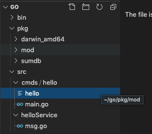</p>
<p>可直接執行該執行檔</p>
<p>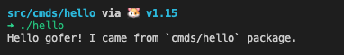</p>
<h3 id="使用-go-build-o定義編譯後檔案名稱"><a href="#使用-go-build-o定義編譯後檔案名稱" class="headerlink" title="使用 go build -o定義編譯後檔案名稱"></a>使用 <code>go build -o</code>定義編譯後檔案名稱</h3><p>假如要把編譯檔案叫做<code>hello_exe.a</code></p>
<figure class="highlight go"><table><tr><td class="gutter"><pre><span class="line">1</span><br></pre></td><td class="code"><pre><span class="line">➜ <span class="keyword">go</span> build -o hello_exe.a</span><br></pre></td></tr></table></figure>
<p>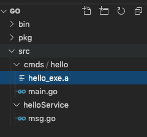</p>
<h3 id="使用-go-build-i-編譯專案的依賴"><a href="#使用-go-build-i-編譯專案的依賴" class="headerlink" title="使用 go build -i 編譯專案的依賴"></a>使用 <code>go build -i</code> 編譯專案的依賴</h3><p>若對專案進行編譯時，加上<code>-i</code>參數，會同時將import的依賴 (ex:<code>helloService</code>)也會編譯該依賴們並安裝在 <code>$GOPATH/pkg</code>底下</p>
<p>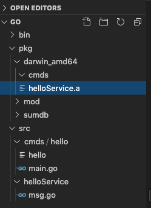</p>
<h3 id="參考"><a href="#參考" class="headerlink" title="參考"></a>參考</h3><p>Go Official Docs: Command go<br><a href="https://golang.org/cmd/go/#Compile%20packages%20and%20dependencies" target="_blank" rel="noopener">https://golang.org/cmd/go/#Compile%20packages%20and%20dependencies</a></p>
<h2 id="go-install-編譯專案成為package"><a href="#go-install-編譯專案成為package" class="headerlink" title="go install 編譯專案成為package"></a><code>go install</code> 編譯專案成為package</h2><p>會將專案 (main) 進行編譯成bin檔案並放置在<code>$GOPATH/bin</code>底下</p>
<p>會將依賴 (package) 進行編譯並安裝在<code>$GOPATH/pkg</code>底下</p>
<figure class="highlight plain"><table><tr><td class="gutter"><pre><span class="line">1</span><br></pre></td><td class="code"><pre><span class="line">如果已經有存在的依賴或是binary檔案、那go install就不會有作用</span><br></pre></td></tr></table></figure>
<h3 id="go-install-n：顯示會進行的動作，但不會真正執行"><a href="#go-install-n：顯示會進行的動作，但不會真正執行" class="headerlink" title="go install -n：顯示會進行的動作，但不會真正執行"></a><code>go install -n</code>：顯示會進行的動作，但不會真正執行</h3><p>假如我們在對剛剛的helloService這個依賴，進行<code>go install -n</code></p>
<p>會看到不會做什麼動作，因為已經有安裝該依賴在<code>pkg</code>底下</p>
<p>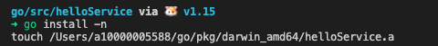</p>
<p>將該依賴移除，再次執行一遍，會看到go tool執行了什麼動作</p>
<p>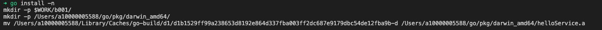</p>
<h3 id="go-install-x：顯示會進行的動作，但會真正執行"><a href="#go-install-x：顯示會進行的動作，但會真正執行" class="headerlink" title="go install -x：顯示會進行的動作，但會真正執行"></a><code>go install -x</code>：顯示會進行的動作，但會真正執行</h3><h4 id="其他flag"><a href="#其他flag" class="headerlink" title="其他flag"></a>其他flag</h4><ul>
<li>-p n: 指定用多少個cpu來進行install, 預設是可取得的數量</li>
</ul>
<h3 id="產生Shared-Libraries，使用-buildmode-flag"><a href="#產生Shared-Libraries，使用-buildmode-flag" class="headerlink" title="產生Shared Libraries，使用-buildmode flag"></a>產生Shared Libraries，使用<code>-buildmode</code> flag</h3><p>透過 <code>go build -buildmode</code> 或是 <code>go install -buildmode</code><br>可以像C或C++那樣產生Shared Libraries，供動態載入</p>
<p>透過<code>go help buildmode</code>可查看有提供哪些模式</p>
<figure class="highlight plain"><table><tr><td class="gutter"><pre><span class="line">1</span><br><span class="line">2</span><br><span class="line">3</span><br></pre></td><td class="code"><pre><span class="line">預設-buildmode會使用 archive：將檔案編譯成 .a</span><br><span class="line"></span><br><span class="line">使用 -buildmode=shared：將檔案編譯成可動態載入的shared lib，或是在runtime時可連結</span><br></pre></td></tr></table></figure>
<p>假如再用剛剛的範例，一個<code>cmds/hello.go</code>中引用了 helloService這個package</p>
<p>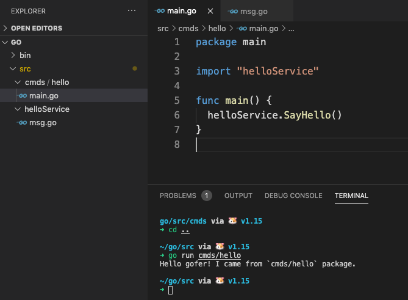</p>
<h4 id="使用-buildmode-shared-產生供go動態連結的Shared-Libraries"><a href="#使用-buildmode-shared-產生供go動態連結的Shared-Libraries" class="headerlink" title="使用 -buildmode=shared 產生供go動態連結的Shared Libraries"></a>使用 <code>-buildmode=shared</code> 產生供go動態連結的Shared Libraries</h4><p>若要將某個package編譯成shared library，</p>
<p>舉個例子，把<code>helloService</code> 編譯成shared library並安裝在<code>pkg</code>資料夾中</p>
<figure class="highlight plain"><table><tr><td class="gutter"><pre><span class="line">1</span><br></pre></td><td class="code"><pre><span class="line">➜ go install -buildmode=shared helloService</span><br></pre></td></tr></table></figure>
<blockquote>
<p>注意: Macos不支援 -buildmode=shared<br>-buildmode=shared not supported on darwin/amd64</p>
</blockquote>
<p>接著編譯主程式，並指定其執行檔可以動態載入(-linkshared) shared library</p>
<figure class="highlight plain"><table><tr><td class="gutter"><pre><span class="line">1</span><br></pre></td><td class="code"><pre><span class="line">➜ go build -linkshared cmds/hello</span><br></pre></td></tr></table></figure>
<p>執行編譯後的執行檔 <code>./hello</code> ，可看到其結果</p>
<p>不過若將<code>pkg</code>中，剛剛go install的<code>helloService</code>的shared library給刪除的話，再次執行 <code>/.hello</code> 那就會發生無法執行狀況。</p>
<h4 id="使用-buildmode-c-archive-產生供C-language-“靜態”連結的Shared-Libraries"><a href="#使用-buildmode-c-archive-產生供C-language-“靜態”連結的Shared-Libraries" class="headerlink" title="使用 -buildmode=c-archive 產生供C language “靜態”連結的Shared Libraries"></a>使用 <code>-buildmode=c-archive</code> 產生供C language “靜態”連結的Shared Libraries</h4><p>如果想要將pakcage編譯成C可以載入的shared library的話，需要對pakcage的method，加上 <code>//export functionName</code></p>
<figure class="highlight go"><table><tr><td class="gutter"><pre><span class="line">1</span><br><span class="line">2</span><br><span class="line">3</span><br><span class="line">4</span><br><span class="line">5</span><br><span class="line">6</span><br><span class="line">7</span><br><span class="line">8</span><br><span class="line">9</span><br></pre></td><td class="code"><pre><span class="line"><span class="keyword">package</span> helloService</span><br><span class="line"></span><br><span class="line"><span class="keyword">import</span> <span class="string">"fmt"</span></span><br><span class="line"><span class="keyword">import</span> <span class="string">"C"</span></span><br><span class="line"></span><br><span class="line"><span class="comment">//export SayHello</span></span><br><span class="line"><span class="function"><span class="keyword">func</span> <span class="title">SayHello</span><span class="params">()</span></span> &#123;</span><br><span class="line">	fmt.Println(<span class="string">"Hello gofer! I came from `cmds/hello` package."</span>)</span><br><span class="line">&#125;</span><br></pre></td></tr></table></figure>
<p>若使用 <code>-buildmode=c-archive</code>的話，則會產生出 <code>.h</code>與<code>.a</code>的shared library</p>
<blockquote>
<p>注意: Macos運行<code>-buildmode=c-archive</code> 會無法產生 <code>.h</code>檔案 go版本: go1.15 darwin/amd64</p>
</blockquote>
<p>接著就可以在C語言內引入用Go build好的share library</p>
<figure class="highlight c"><table><tr><td class="gutter"><pre><span class="line">1</span><br><span class="line">2</span><br><span class="line">3</span><br><span class="line">4</span><br><span class="line">5</span><br><span class="line">6</span><br></pre></td><td class="code"><pre><span class="line"><span class="meta">#<span class="meta-keyword">include</span> <span class="meta-string">"hello.a"</span></span></span><br><span class="line"></span><br><span class="line"><span class="function"><span class="keyword">int</span> <span class="title">main</span><span class="params">(<span class="keyword">void</span>)</span> </span>&#123;</span><br><span class="line">  SayHello();</span><br><span class="line">  <span class="keyword">return</span> <span class="number">0</span>;</span><br><span class="line">&#125;</span><br></pre></td></tr></table></figure>
<p>執行之</p>
<figure class="highlight plain"><table><tr><td class="gutter"><pre><span class="line">1</span><br></pre></td><td class="code"><pre><span class="line">cc hello.c ./hello</span><br></pre></td></tr></table></figure>
<h4 id="使用-buildmode-c-shared-產生供C-language-“動態”連結的Shared-Libraries"><a href="#使用-buildmode-c-shared-產生供C-language-“動態”連結的Shared-Libraries" class="headerlink" title="使用 -buildmode=c-shared 產生供C language “動態”連結的Shared Libraries"></a>使用 <code>-buildmode=c-shared</code> 產生供C language “動態”連結的Shared Libraries</h4><p>同用go產生出shared library</p>
<h4 id="使用-buildmode-plugin-將所有import的packages，打包成go-plugin"><a href="#使用-buildmode-plugin-將所有import的packages，打包成go-plugin" class="headerlink" title="使用 -buildmode=plugin 將所有import的packages，打包成go plugin"></a>使用 <code>-buildmode=plugin</code> 將所有import的packages，打包成go plugin</h4><p>可以把專案需要import的package，打包成plugin</p>
<p>舉個例子，若現在我們要將plugin這一個pakcage打包成plugin</p>
<figure class="highlight go"><table><tr><td class="gutter"><pre><span class="line">1</span><br><span class="line">2</span><br><span class="line">3</span><br><span class="line">4</span><br><span class="line">5</span><br><span class="line">6</span><br><span class="line">7</span><br></pre></td><td class="code"><pre><span class="line"><span class="keyword">package</span> main</span><br><span class="line"></span><br><span class="line"><span class="keyword">import</span> <span class="string">"fmt"</span></span><br><span class="line"></span><br><span class="line"><span class="function"><span class="keyword">func</span> <span class="title">ThingToDo</span><span class="params">()</span></span> &#123;</span><br><span class="line">	fmt.Println(<span class="string">"Executing action"</span>)</span><br><span class="line">&#125;</span><br></pre></td></tr></table></figure>
<p>透過以下指令，做出一個plugin，檔名叫做 plugin 副檔名為<code>.so</code><br><figure class="highlight plain"><table><tr><td class="gutter"><pre><span class="line">1</span><br></pre></td><td class="code"><pre><span class="line">➜ go build -buildmode=plugin -o=plugin.so plugin/plugin.go</span><br></pre></td></tr></table></figure></p>
<p>接著我們定義了一個小專案，來使用plugin</p>
<figure class="highlight go"><table><tr><td class="gutter"><pre><span class="line">1</span><br><span class="line">2</span><br><span class="line">3</span><br><span class="line">4</span><br><span class="line">5</span><br><span class="line">6</span><br><span class="line">7</span><br><span class="line">8</span><br><span class="line">9</span><br><span class="line">10</span><br><span class="line">11</span><br><span class="line">12</span><br><span class="line">13</span><br><span class="line">14</span><br><span class="line">15</span><br><span class="line">16</span><br><span class="line">17</span><br><span class="line">18</span><br><span class="line">19</span><br><span class="line">20</span><br><span class="line">21</span><br><span class="line">22</span><br><span class="line">23</span><br><span class="line">24</span><br><span class="line">25</span><br><span class="line">26</span><br><span class="line">27</span><br><span class="line">28</span><br><span class="line">29</span><br><span class="line">30</span><br><span class="line">31</span><br><span class="line">32</span><br><span class="line">33</span><br><span class="line">34</span><br><span class="line">35</span><br><span class="line">36</span><br></pre></td><td class="code"><pre><span class="line"><span class="keyword">package</span> main</span><br><span class="line"></span><br><span class="line"><span class="keyword">import</span> (</span><br><span class="line">	<span class="string">"flag"</span></span><br><span class="line">	<span class="string">"log"</span></span><br><span class="line">	<span class="string">"plugin"</span></span><br><span class="line">)</span><br><span class="line"></span><br><span class="line"><span class="function"><span class="keyword">func</span> <span class="title">main</span><span class="params">()</span></span> &#123;</span><br><span class="line">	path := flag.String(<span class="string">"plugin"</span>, <span class="string">""</span>, <span class="string">"Plugin to execute"</span>)</span><br><span class="line"></span><br><span class="line">	flag.Parse()</span><br><span class="line">    <span class="comment">// 如果執行go時沒有帶 -plugin指令</span></span><br><span class="line">	<span class="keyword">if</span> *path == <span class="string">""</span> &#123;</span><br><span class="line">		log.Fatal(<span class="string">"Path to plugin must be provided"</span>)</span><br><span class="line">	&#125;</span><br><span class="line"></span><br><span class="line">    <span class="comment">// 讀取plugin</span></span><br><span class="line">	p, err := plugin.Open(*path)</span><br><span class="line">	<span class="keyword">if</span> err != <span class="literal">nil</span> &#123;</span><br><span class="line">		log.Fatal(err)</span><br><span class="line">	&#125;</span><br><span class="line"></span><br><span class="line">    <span class="comment">// 尋找plugin是否有ThingToDo這個方法</span></span><br><span class="line">	f, err := p.Lookup(<span class="string">"ThingToDo"</span>)</span><br><span class="line">	<span class="keyword">if</span> err != <span class="literal">nil</span> &#123;</span><br><span class="line">		log.Fatal(err)</span><br><span class="line">	&#125;</span><br><span class="line"></span><br><span class="line">	thingToDo, ok := f.(<span class="function"><span class="keyword">func</span><span class="params">()</span>)</span></span><br><span class="line"><span class="function">	<span class="title">if</span> !<span class="title">ok</span></span> &#123;</span><br><span class="line">		log.Fatal(<span class="string">"Could not find function 'ThingToDo' in plugin"</span>)</span><br><span class="line">	&#125;</span><br><span class="line">	thingToDo()</span><br><span class="line">	log.Println(<span class="string">"Did the thing"</span>)</span><br><span class="line">&#125;</span><br></pre></td></tr></table></figure>
<p>接著運行下面指令使用plugin</p>
<figure class="highlight plain"><table><tr><td class="gutter"><pre><span class="line">1</span><br></pre></td><td class="code"><pre><span class="line">➜ go run action/action.go -plugin=./plugin.so</span><br></pre></td></tr></table></figure>
<p>如果plugin存在的話，就可以執行 <code>plugin.so</code>內的<code>ThingToDo</code>方法</p>
<p>執行結果<br>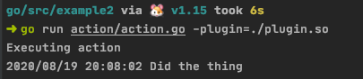</p>
<h4 id="參考-1"><a href="#參考-1" class="headerlink" title="參考"></a>參考</h4><p>Golang的构建模式 - Chen Jiehua<br><a href="https://chenjiehua.me/golang/golang-buildmode.html" target="_blank" rel="noopener">https://chenjiehua.me/golang/golang-buildmode.html</a></p>
<h2 id="go-test-撰寫單元測試Unit-Testing-Programs"><a href="#go-test-撰寫單元測試Unit-Testing-Programs" class="headerlink" title="go test 撰寫單元測試Unit Testing Programs"></a><code>go test</code> 撰寫單元測試Unit Testing Programs</h2><p>透過 <code>go test</code> 可測試golang撰寫的程式的Input與Output是否正確</p>
<h3 id="測試需注意的規則"><a href="#測試需注意的規則" class="headerlink" title="測試需注意的規則"></a>測試需注意的規則</h3><p>由於go本身對測試有著嚴謹的規則，故可以避免像其他語言那樣有各種不同測試的框架，以統一測試的樣式</p>
<p>其規則如下：</p>
<ul>
<li>若有定義測試的檔案名稱，需要以 <code>_test.go</code>最結尾命名</li>
</ul>
<figure class="highlight plain"><table><tr><td class="gutter"><pre><span class="line">1</span><br></pre></td><td class="code"><pre><span class="line">mylib_test.go</span><br></pre></td></tr></table></figure>
<ul>
<li>若需要被測試的方法，請以 <code>Test_</code> 為開頭</li>
</ul>
<figure class="highlight plain"><table><tr><td class="gutter"><pre><span class="line">1</span><br></pre></td><td class="code"><pre><span class="line">func Test_MyFunction() &#123;&#125;</span><br></pre></td></tr></table></figure>
<h3 id="執行測試"><a href="#執行測試" class="headerlink" title="執行測試"></a>執行測試</h3><p>若有個專案叫做 <code>testing_example</code>，其目錄架構如下</p>
<p>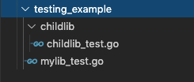</p>
<p><code>testing_example/mylib_test.go</code><br><figure class="highlight go"><table><tr><td class="gutter"><pre><span class="line">1</span><br><span class="line">2</span><br><span class="line">3</span><br><span class="line">4</span><br><span class="line">5</span><br><span class="line">6</span><br><span class="line">7</span><br><span class="line">8</span><br><span class="line">9</span><br><span class="line">10</span><br><span class="line">11</span><br><span class="line">12</span><br><span class="line">13</span><br><span class="line">14</span><br><span class="line">15</span><br><span class="line">16</span><br><span class="line">17</span><br><span class="line">18</span><br></pre></td><td class="code"><pre><span class="line"><span class="keyword">package</span> mylib</span><br><span class="line"></span><br><span class="line"><span class="keyword">import</span> (</span><br><span class="line">	<span class="string">"testing"</span></span><br><span class="line">)</span><br><span class="line"></span><br><span class="line"><span class="function"><span class="keyword">func</span> <span class="title">Test_BasicChecks</span><span class="params">(t *testing.T)</span></span> &#123;</span><br><span class="line">	t.Run(<span class="string">"Go can add"</span>, <span class="function"><span class="keyword">func</span><span class="params">(t *testing.T)</span></span> &#123;</span><br><span class="line">		<span class="keyword">if</span> <span class="number">1</span>+<span class="number">1</span> != <span class="number">2</span> &#123;</span><br><span class="line">			t.Fail()</span><br><span class="line">		&#125;</span><br><span class="line">	&#125;)</span><br><span class="line">	t.Run(<span class="string">"Go can concatenate strings"</span>, <span class="function"><span class="keyword">func</span><span class="params">(t *testing.T)</span></span> &#123;</span><br><span class="line">		<span class="keyword">if</span> <span class="string">"Hello, "</span>+<span class="string">"Go"</span> != <span class="string">"Hello, Go"</span> &#123;</span><br><span class="line">			t.Fail()</span><br><span class="line">		&#125;</span><br><span class="line">	&#125;)</span><br><span class="line">&#125;</span><br></pre></td></tr></table></figure></p>
<p>其子package也有定義testing file <code></code>testing_example/childlib/childlib_test.go`<br><figure class="highlight go"><table><tr><td class="gutter"><pre><span class="line">1</span><br><span class="line">2</span><br><span class="line">3</span><br><span class="line">4</span><br><span class="line">5</span><br><span class="line">6</span><br><span class="line">7</span><br><span class="line">8</span><br><span class="line">9</span><br><span class="line">10</span><br><span class="line">11</span><br></pre></td><td class="code"><pre><span class="line"><span class="keyword">package</span> childlib</span><br><span class="line"></span><br><span class="line"><span class="keyword">import</span> (</span><br><span class="line">	<span class="string">"testing"</span></span><br><span class="line">)</span><br><span class="line"></span><br><span class="line"><span class="function"><span class="keyword">func</span> <span class="title">Test_MoreBasics</span><span class="params">(t *testing.T)</span></span> &#123;</span><br><span class="line">	<span class="keyword">if</span> <span class="number">10</span><span class="number">-5</span> != <span class="number">5</span> &#123;</span><br><span class="line">		t.Error(<span class="string">"Failed to subtract correctly"</span>)</span><br><span class="line">	&#125;</span><br><span class="line">&#125;</span><br></pre></td></tr></table></figure></p>
<h3 id="執行測試的範疇"><a href="#執行測試的範疇" class="headerlink" title="執行測試的範疇"></a>執行測試的範疇</h3><p>若要對專案執行Unit Test：</p>
<figure class="highlight plain"><table><tr><td class="gutter"><pre><span class="line">1</span><br><span class="line">2</span><br><span class="line">3</span><br></pre></td><td class="code"><pre><span class="line">~/go/src via v1.15 </span><br><span class="line">➜ go test testing_example </span><br><span class="line">ok      testing_example 0.014s</span><br></pre></td></tr></table></figure>
<p>但會發現child package的測試沒有執行到，所以若要對package內所有子<br>package都進行測試，那需要加上 <code>/...</code> 做遞迴尋找的動作</p>
<figure class="highlight plain"><table><tr><td class="gutter"><pre><span class="line">1</span><br><span class="line">2</span><br><span class="line">3</span><br><span class="line">4</span><br></pre></td><td class="code"><pre><span class="line">~/go/src via 🐹 v1.15 </span><br><span class="line">➜ go test testing_example/...</span><br><span class="line">ok      testing_example (cached)</span><br><span class="line">ok      testing_example/childlib        0.015s</span><br></pre></td></tr></table></figure>
<h3 id="測試可以夾帶的參數-flags"><a href="#測試可以夾帶的參數-flags" class="headerlink" title="測試可以夾帶的參數 flags"></a>測試可以夾帶的參數 flags</h3><p>透過 <code>go help testflag</code> 可以查看執行測試時可以客製化的選擇</p>
<p>列舉一些常使用的：</p>
<ul>
<li><code>-cpu</code>: 指定測試時使用的CPU數量，預設是會使用 <code>GOMAXPROCS</code>參數的值</li>
<li><code>-parallel</code>: 測試時可以並行處理，但只有指定Function才會被並行處理</li>
</ul>
<figure class="highlight go"><table><tr><td class="gutter"><pre><span class="line">1</span><br><span class="line">2</span><br><span class="line">3</span><br><span class="line">4</span><br><span class="line">5</span><br><span class="line">6</span><br><span class="line">7</span><br><span class="line">8</span><br></pre></td><td class="code"><pre><span class="line"><span class="function"><span class="keyword">func</span> <span class="title">Test_BasicChecks</span><span class="params">(t *testing.T)</span></span> &#123;</span><br><span class="line">	t.Parallel()  <span class="comment">// 進行並行測試</span></span><br><span class="line">	t.Run(<span class="string">"Go can add"</span>, <span class="function"><span class="keyword">func</span><span class="params">(t *testing.T)</span></span> &#123;</span><br><span class="line">		<span class="keyword">if</span> <span class="number">1</span>+<span class="number">1</span> != <span class="number">2</span> &#123;</span><br><span class="line">			t.Fail()</span><br><span class="line">		&#125;</span><br><span class="line">	&#125;)</span><br><span class="line">&#125;</span><br></pre></td></tr></table></figure>
<ul>
<li><code>-list</code>: 可透過正則表達式過濾出測試方法名稱，再測試時會列出符合的測試方法給</li>
</ul>
<p>假如要列出有包含 <code>Basics</code>的測試方法名稱：<br><figure class="highlight plain"><table><tr><td class="gutter"><pre><span class="line">1</span><br><span class="line">2</span><br><span class="line">3</span><br><span class="line">4</span><br><span class="line">5</span><br></pre></td><td class="code"><pre><span class="line">~/go/src via v1.15 </span><br><span class="line">➜ go test -list Basics testing_example/...</span><br><span class="line">ok      testing_example 0.022s</span><br><span class="line">Test_MoreBasics   // 列出</span><br><span class="line">ok      testing_example/childlib        0.023s</span><br></pre></td></tr></table></figure></p>
<ul>
<li><code>-run</code>: 跟List很像，但只會執行符合正則表達式的測試方法<ul>
<li>使用時機：若開發出子專案的測試方法，透過<code>-run</code>指定該子專案的scope執行測試就好，就可以省去不少時間</li>
</ul>
</li>
</ul>
<figure class="highlight plain"><table><tr><td class="gutter"><pre><span class="line">1</span><br><span class="line">2</span><br><span class="line">3</span><br><span class="line">4</span><br></pre></td><td class="code"><pre><span class="line">~/go/src via v1.15 </span><br><span class="line">➜ go test -run Basics testing_example/...</span><br><span class="line">ok      testing_example 0.024s [no tests to run]</span><br><span class="line">ok      testing_example/childlib        0.022s</span><br></pre></td></tr></table></figure>
<ul>
<li><code>-timeout d</code>: 超過多久就停止測試，預設為10分鐘</li>
<li><code>-v</code>: 測試時將詳細結果列出來</li>
</ul>
<figure class="highlight plain"><table><tr><td class="gutter"><pre><span class="line">1</span><br><span class="line">2</span><br><span class="line">3</span><br><span class="line">4</span><br><span class="line">5</span><br><span class="line">6</span><br><span class="line">7</span><br><span class="line">8</span><br><span class="line">9</span><br><span class="line">10</span><br><span class="line">11</span><br><span class="line">12</span><br><span class="line">13</span><br><span class="line">14</span><br><span class="line">15</span><br><span class="line">16</span><br><span class="line">17</span><br><span class="line">18</span><br></pre></td><td class="code"><pre><span class="line">~/go/src via v1.15 </span><br><span class="line">➜ go test -v testing_example/...</span><br><span class="line">=== RUN   Test_BasicChecks</span><br><span class="line">=== PAUSE Test_BasicChecks</span><br><span class="line">=== CONT  Test_BasicChecks</span><br><span class="line">=== RUN   Test_BasicChecks/Go_can_add</span><br><span class="line">=== RUN   Test_BasicChecks/Go_can_concatenate_strings</span><br><span class="line">--- PASS: Test_BasicChecks (0.00s)</span><br><span class="line">    --- PASS: Test_BasicChecks/Go_can_add (0.00s)</span><br><span class="line">    --- PASS: Test_BasicChecks/Go_can_concatenate_strings (0.00s)</span><br><span class="line">PASS</span><br><span class="line">ok      testing_example 0.017s</span><br><span class="line">=== RUN   Test_MoreBasics</span><br><span class="line">=== PAUSE Test_MoreBasics</span><br><span class="line">=== CONT  Test_MoreBasics</span><br><span class="line">--- PASS: Test_MoreBasics (0.00s)</span><br><span class="line">PASS</span><br><span class="line">ok      testing_example/childlib        0.025s</span><br></pre></td></tr></table></figure>
<ul>
<li><code>-count</code>: 指定執行測試的次數</li>
<li><code>-cover</code>: 顯示測試的涵蓋範圍資訊</li>
</ul>
<h3 id="測試的涵蓋-Code-Coverage"><a href="#測試的涵蓋-Code-Coverage" class="headerlink" title="測試的涵蓋 Code Coverage"></a>測試的涵蓋 Code Coverage</h3><p>可以透過 <code>go test -cover</code> 來查看目前測試項目涵蓋了多少開發的內容</p>
<p>以下為測試的項目內容：</p>
<p>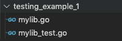</p>
<p><code>mylib.go</code><br><figure class="highlight go"><table><tr><td class="gutter"><pre><span class="line">1</span><br><span class="line">2</span><br><span class="line">3</span><br><span class="line">4</span><br><span class="line">5</span><br><span class="line">6</span><br><span class="line">7</span><br><span class="line">8</span><br><span class="line">9</span><br></pre></td><td class="code"><pre><span class="line"><span class="keyword">package</span> mylib</span><br><span class="line"></span><br><span class="line"><span class="function"><span class="keyword">func</span> <span class="title">adder</span><span class="params">(l, r <span class="keyword">int</span>)</span> <span class="title">int</span></span> &#123;</span><br><span class="line">	<span class="keyword">return</span> l + r</span><br><span class="line">&#125;</span><br><span class="line"></span><br><span class="line"><span class="function"><span class="keyword">func</span> <span class="title">subractor</span><span class="params">(l, r <span class="keyword">int</span>)</span> <span class="title">int</span></span> &#123;</span><br><span class="line">	<span class="keyword">return</span> l - r</span><br><span class="line">&#125;</span><br></pre></td></tr></table></figure></p>
<p><code>mylib_test.go</code><br><figure class="highlight go"><table><tr><td class="gutter"><pre><span class="line">1</span><br><span class="line">2</span><br><span class="line">3</span><br><span class="line">4</span><br><span class="line">5</span><br><span class="line">6</span><br><span class="line">7</span><br><span class="line">8</span><br><span class="line">9</span><br><span class="line">10</span><br><span class="line">11</span><br><span class="line">12</span><br></pre></td><td class="code"><pre><span class="line"><span class="keyword">package</span> mylib</span><br><span class="line"></span><br><span class="line"><span class="keyword">import</span> (</span><br><span class="line">	<span class="string">"testing"</span></span><br><span class="line">)</span><br><span class="line"></span><br><span class="line"><span class="comment">// 在這邊只有測試adder方法，沒有subractor方法</span></span><br><span class="line"><span class="function"><span class="keyword">func</span> <span class="title">TestAdder</span><span class="params">(t *testing.T)</span></span> &#123;</span><br><span class="line">	<span class="keyword">if</span> adder(<span class="number">2</span>, <span class="number">5</span>) != <span class="number">7</span> &#123;</span><br><span class="line">		t.Fail()</span><br><span class="line">	&#125;</span><br><span class="line">&#125;</span><br></pre></td></tr></table></figure></p>
<p>可以看到上述的範例只測試一個方法<br><figure class="highlight go"><table><tr><td class="gutter"><pre><span class="line">1</span><br><span class="line">2</span><br><span class="line">3</span><br></pre></td><td class="code"><pre><span class="line">~/<span class="keyword">go</span>/src via v1<span class="number">.15</span> </span><br><span class="line">➜ <span class="keyword">go</span> test -cover testing_example_1 </span><br><span class="line">ok      testing_example_1       <span class="number">0.013s</span>  coverage: <span class="number">50.0</span>% of statements</span><br></pre></td></tr></table></figure></p>
<h4 id="透過go-test-coverpkg-指定測試程式引用的package"><a href="#透過go-test-coverpkg-指定測試程式引用的package" class="headerlink" title="透過go test -coverpkg 指定測試程式引用的package"></a>透過<code>go test -coverpkg</code> 指定測試程式引用的package</h4><p>再用上述的範例，我們打算測試專案 <code>testing_example_1</code>中的 <code>fmt</code> 與 <code>testing_example_1</code>本身自己這兩個pacakge：</p>
<figure class="highlight plain"><table><tr><td class="gutter"><pre><span class="line">1</span><br><span class="line">2</span><br><span class="line">3</span><br><span class="line">4</span><br><span class="line">5</span><br></pre></td><td class="code"><pre><span class="line">~/go/src via v1.15 </span><br><span class="line">➜ go test -coverpkg testing_example_1, fmt testing_example_1 </span><br><span class="line">warning: no packages being tested depend on matches for pattern </span><br><span class="line">ok      fmt     0.089s  coverage: 0.0% of statements in testing_example_1, </span><br><span class="line">ok      testing_example_1       0.019s  coverage: 50.0% of statements in testing_example_1,</span><br></pre></td></tr></table></figure>
<h4 id="透過go-test-coverprofile-產出測試的報告"><a href="#透過go-test-coverprofile-產出測試的報告" class="headerlink" title="透過go test -coverprofile 產出測試的報告"></a>透過<code>go test -coverprofile</code> 產出測試的報告</h4><figure class="highlight plain"><table><tr><td class="gutter"><pre><span class="line">1</span><br><span class="line">2</span><br><span class="line">3</span><br></pre></td><td class="code"><pre><span class="line">~/go/src via v1.15 </span><br><span class="line">➜ go test -coverprofile cover.out testing_example_1 </span><br><span class="line">ok      testing_example_1       0.012s  coverage: 50.0% of statements</span><br></pre></td></tr></table></figure>
<p>同時會產生 <code>cover.out</code>這個測試報告檔案，內容如下<br><figure class="highlight plain"><table><tr><td class="gutter"><pre><span class="line">1</span><br><span class="line">2</span><br><span class="line">3</span><br></pre></td><td class="code"><pre><span class="line">mode: set</span><br><span class="line">testing_example_1/mylib.go:3.26,5.2 1 1</span><br><span class="line">testing_example_1/mylib.go:7.30,9.2 1 0</span><br></pre></td></tr></table></figure></p>
<h4 id="透過-go-tool-查看測試報告"><a href="#透過-go-tool-查看測試報告" class="headerlink" title="透過 go tool 查看測試報告"></a>透過 go tool 查看測試報告</h4><p>可以透過 <code>go tool cover -html= 測試報告檔案名稱</code> 來產生出以網頁方式瀏覽的報告</p>
<p>若要解析產生出來的報告 <code>cover.out</code></p>
<p><code>go tool cover -html=cover.out</code></p>
<p>可以產出Web呈現，測試的報告</p>
<p>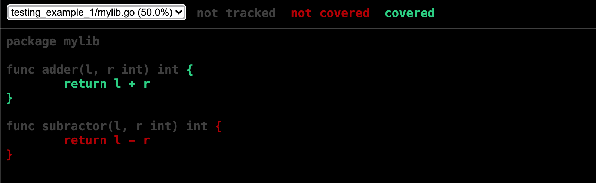<br></p>
<p>如果要看出更詳細的測試報告的話，例如想看到測試方法被執行幾次</p>
<figure class="highlight go"><table><tr><td class="gutter"><pre><span class="line">1</span><br><span class="line">2</span><br><span class="line">3</span><br></pre></td><td class="code"><pre><span class="line">~/<span class="keyword">go</span>/src via v1<span class="number">.15</span></span><br><span class="line">➜ <span class="keyword">go</span> test -covermode count -coverprofile cover.out testing_example_1 </span><br><span class="line">ok      testing_example_1       <span class="number">0.018s</span>  coverage: <span class="number">50.0</span>% of statements</span><br></pre></td></tr></table></figure>
<p>一樣會產生出 <code>cover.out</code>檔案，這時再透過 <code>go tool cover -html</code></p>
<p>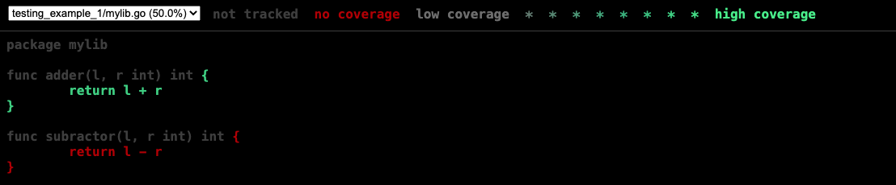<br></p>
<h3 id="進行壓力測試-Benchmark-Testing"><a href="#進行壓力測試-Benchmark-Testing" class="headerlink" title="進行壓力測試 Benchmark Testing"></a>進行壓力測試 Benchmark Testing</h3><p>golang的test工具亦提供benchmark的測試，可以看出該方法需要耗費多少CPU資源</p>
<h4 id="規則"><a href="#規則" class="headerlink" title="規則"></a>規則</h4><p>需要定義方法名稱前綴為 <code>Benchmark</code> 例如:</p>
<figure class="highlight go"><table><tr><td class="gutter"><pre><span class="line">1</span><br><span class="line">2</span><br><span class="line">3</span><br><span class="line">4</span><br><span class="line">5</span><br></pre></td><td class="code"><pre><span class="line"><span class="function"><span class="keyword">func</span> <span class="title">BenchmarkAdder</span><span class="params">(b *testing.B)</span></span> &#123;</span><br><span class="line">	<span class="keyword">for</span> i := <span class="number">0</span>; i &lt; b.N; i++ &#123;</span><br><span class="line">		adder(<span class="number">5</span>, <span class="number">7</span>)</span><br><span class="line">	&#125;</span><br><span class="line">&#125;</span><br></pre></td></tr></table></figure>
<h4 id="指令-go-test-bench"><a href="#指令-go-test-bench" class="headerlink" title="指令: go test -bench"></a>指令: <code>go test -bench</code></h4><p>若要對testing_example_2這個專案下的檔案：<br>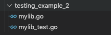<br></p>
<p><code>mylib.go</code><br><figure class="highlight go"><table><tr><td class="gutter"><pre><span class="line">1</span><br><span class="line">2</span><br><span class="line">3</span><br><span class="line">4</span><br><span class="line">5</span><br></pre></td><td class="code"><pre><span class="line"><span class="keyword">package</span> mylib</span><br><span class="line"></span><br><span class="line"><span class="function"><span class="keyword">func</span> <span class="title">adder</span><span class="params">(l, r <span class="keyword">int</span>)</span> <span class="title">int</span></span> &#123;</span><br><span class="line">	<span class="keyword">return</span> l + r</span><br><span class="line">&#125;</span><br></pre></td></tr></table></figure></p>
<p><code>mylib_test.go</code><br><figure class="highlight go"><table><tr><td class="gutter"><pre><span class="line">1</span><br><span class="line">2</span><br><span class="line">3</span><br><span class="line">4</span><br><span class="line">5</span><br><span class="line">6</span><br><span class="line">7</span><br><span class="line">8</span><br><span class="line">9</span><br><span class="line">10</span><br><span class="line">11</span><br><span class="line">12</span><br><span class="line">13</span><br><span class="line">14</span><br><span class="line">15</span><br><span class="line">16</span><br><span class="line">17</span><br></pre></td><td class="code"><pre><span class="line"><span class="keyword">package</span> mylib</span><br><span class="line"></span><br><span class="line"><span class="keyword">import</span> (</span><br><span class="line">	<span class="string">"testing"</span></span><br><span class="line">)</span><br><span class="line"></span><br><span class="line"><span class="function"><span class="keyword">func</span> <span class="title">TestAdder</span><span class="params">(t *testing.T)</span></span> &#123;</span><br><span class="line">	<span class="keyword">if</span> adder(<span class="number">2</span>, <span class="number">5</span>) != <span class="number">7</span> &#123;</span><br><span class="line">		t.Fail()</span><br><span class="line">	&#125;</span><br><span class="line">&#125;</span><br><span class="line"></span><br><span class="line"><span class="function"><span class="keyword">func</span> <span class="title">BenchmarkAdder</span><span class="params">(b *testing.B)</span></span> &#123;</span><br><span class="line">	<span class="keyword">for</span> i := <span class="number">0</span>; i &lt; b.N; i++ &#123;</span><br><span class="line">		adder(<span class="number">5</span>, <span class="number">7</span>)</span><br><span class="line">	&#125;</span><br><span class="line">&#125;</span><br></pre></td></tr></table></figure></p>
<p>這時透過 <code>go test -bench Adder testing_example_2</code>，對<code>testing_example_2</code>這專案內有包含 <code>Adder</code>的壓測方法進行壓力測試</p>
<figure class="highlight plain"><table><tr><td class="gutter"><pre><span class="line">1</span><br><span class="line">2</span><br><span class="line">3</span><br><span class="line">4</span><br><span class="line">5</span><br><span class="line">6</span><br><span class="line">7</span><br><span class="line">8</span><br></pre></td><td class="code"><pre><span class="line">~/go/src via v1.15</span><br><span class="line">➜ go test -bench Adder testing_example_2</span><br><span class="line">goos: darwin</span><br><span class="line">goarch: amd64</span><br><span class="line">pkg: testing_example_2</span><br><span class="line">BenchmarkAdder-4        1000000000               0.374 ns/op</span><br><span class="line">PASS</span><br><span class="line">ok      testing_example_2       0.433s</span><br></pre></td></tr></table></figure>
<p>BenchmarkAdder 這隻方法執行了1000000000次, 每次花了 0.374 ns</p>
<p>或是也可以不指定方法Benchmark名稱 <code>go test -bench . testing_example_2</code></p>
<h4 id="指定要花多少時間做benchmark測試：-go-test-benchtime"><a href="#指定要花多少時間做benchmark測試：-go-test-benchtime" class="headerlink" title="指定要花多少時間做benchmark測試： go test -benchtime"></a>指定要花多少時間做benchmark測試： <code>go test -benchtime</code></h4><p>可指定壓測測多少時間，可以擴展壓測的次數</p>
<p>舉例，只壓測0.001秒，那可看到只會測出 2864049次<br><figure class="highlight plain"><table><tr><td class="gutter"><pre><span class="line">1</span><br><span class="line">2</span><br><span class="line">3</span><br><span class="line">4</span><br><span class="line">5</span><br><span class="line">6</span><br><span class="line">7</span><br><span class="line">8</span><br></pre></td><td class="code"><pre><span class="line">~/go/src via v1.15 </span><br><span class="line">➜ go test -benchtime 0.001s -bench . testing_example_2</span><br><span class="line">goos: darwin</span><br><span class="line">goarch: amd64</span><br><span class="line">pkg: testing_example_2</span><br><span class="line">BenchmarkAdder-4         2864049                 0.485 ns/op</span><br><span class="line">PASS</span><br><span class="line">ok      testing_example_2       0.024s</span><br></pre></td></tr></table></figure></p>
<figure class="highlight plain"><table><tr><td class="gutter"><pre><span class="line">1</span><br><span class="line">2</span><br><span class="line">3</span><br><span class="line">4</span><br></pre></td><td class="code"><pre><span class="line"></span><br><span class="line">#### 檢視壓力測試花多少記憶體： `go test -bench . -benchmem`</span><br><span class="line"></span><br><span class="line">透過 `-bemchmem`這個flag，壓測資訊會多了 `B/op` 與 `allocs/op` 來檢視該方法壓測時花了多少記憶體資源</span><br></pre></td></tr></table></figure>
<p>~/go/src via v1.15<br>➜ go test -bench . -benchmem testing_example_2<br>goos: darwin<br>goarch: amd64<br>pkg: testing_example_2<br>BenchmarkAdder-4        1000000000               0.501 ns/op           0 B/op          0 allocs/op<br>PASS<br>ok      testing_example_2       0.586s<br><figure class="highlight plain"><table><tr><td class="gutter"><pre><span class="line">1</span><br><span class="line">2</span><br><span class="line">3</span><br><span class="line">4</span><br><span class="line">5</span><br><span class="line">6</span><br><span class="line">7</span><br></pre></td><td class="code"><pre><span class="line"></span><br><span class="line"></span><br><span class="line">### 使用go tool pprof  (performance profiling tool) 產生測試報告</span><br><span class="line"></span><br><span class="line">產出報告之前，需要先安裝 `graphviz`這個套件，這樣go tool才能夠繪製流程圖供我們查看</span><br><span class="line"></span><br><span class="line">Linux/Macos</span><br></pre></td></tr></table></figure></p>
<p>sudo apt-get install graphyiz<br><figure class="highlight plain"><table><tr><td class="gutter"><pre><span class="line">1</span><br><span class="line">2</span><br><span class="line">3</span><br><span class="line">4</span><br><span class="line">5</span><br><span class="line">6</span><br><span class="line">7</span><br><span class="line">8</span><br><span class="line">9</span><br><span class="line">10</span><br><span class="line">11</span><br><span class="line">12</span><br><span class="line">13</span><br><span class="line">14</span><br><span class="line">15</span><br><span class="line">16</span><br><span class="line">17</span><br><span class="line">18</span><br><span class="line">19</span><br></pre></td><td class="code"><pre><span class="line"></span><br><span class="line">&gt; 更多有關graphyiz資訊請到： http://graphviz.org</span><br><span class="line">&gt; </span><br><span class="line"></span><br><span class="line">#### 產生程式記憶體花費報告 `go test -memprofile`</span><br><span class="line"></span><br><span class="line">一樣用testing_example_2這個專案下的檔案做測試</span><br><span class="line"></span><br><span class="line"></span><br><span class="line"></span><br><span class="line"></span><br><span class="line"></span><br><span class="line">`mylib.go`</span><br><span class="line">```go=</span><br><span class="line">package mylib</span><br><span class="line"></span><br><span class="line">func adder(l, r int) int &#123;</span><br><span class="line">	return l + r</span><br><span class="line">&#125;</span><br></pre></td></tr></table></figure></p>
<p><code>mylib_test.go</code><br><figure class="highlight go"><table><tr><td class="gutter"><pre><span class="line">1</span><br><span class="line">2</span><br><span class="line">3</span><br><span class="line">4</span><br><span class="line">5</span><br><span class="line">6</span><br><span class="line">7</span><br><span class="line">8</span><br><span class="line">9</span><br><span class="line">10</span><br><span class="line">11</span><br><span class="line">12</span><br><span class="line">13</span><br><span class="line">14</span><br><span class="line">15</span><br><span class="line">16</span><br><span class="line">17</span><br></pre></td><td class="code"><pre><span class="line"><span class="keyword">package</span> mylib</span><br><span class="line"></span><br><span class="line"><span class="keyword">import</span> (</span><br><span class="line">	<span class="string">"testing"</span></span><br><span class="line">)</span><br><span class="line"></span><br><span class="line"><span class="function"><span class="keyword">func</span> <span class="title">TestAdder</span><span class="params">(t *testing.T)</span></span> &#123;</span><br><span class="line">	<span class="keyword">if</span> adder(<span class="number">2</span>, <span class="number">5</span>) != <span class="number">7</span> &#123;</span><br><span class="line">		t.Fail()</span><br><span class="line">	&#125;</span><br><span class="line">&#125;</span><br><span class="line"></span><br><span class="line"><span class="function"><span class="keyword">func</span> <span class="title">BenchmarkAdder</span><span class="params">(b *testing.B)</span></span> &#123;</span><br><span class="line">	<span class="keyword">for</span> i := <span class="number">0</span>; i &lt; b.N; i++ &#123;</span><br><span class="line">		adder(<span class="number">5</span>, <span class="number">7</span>)</span><br><span class="line">	&#125;</span><br><span class="line">&#125;</span><br></pre></td></tr></table></figure></p>
<p>透過 <code>go test -memprofile mem.out testing_example_2</code> 來產出叫做 <code>mem.out</code>的測試報告</p>
<p>測試結果<br><figure class="highlight plain"><table><tr><td class="gutter"><pre><span class="line">1</span><br><span class="line">2</span><br><span class="line">3</span><br></pre></td><td class="code"><pre><span class="line">~/go/src via v1.15 </span><br><span class="line">➜ go test -memprofile mem.out testing_example_2</span><br><span class="line">ok      testing_example_2       0.018s</span><br></pre></td></tr></table></figure></p>
<p>以及會產生兩個檔案 <code>mem.out</code> 與 <code>testing_example_2.test</code>，後者主要提供給 go tool pprof檢視</p>
<p>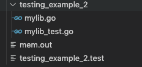<br></p>
<p>接著透過 <code>go tool pprof</code>檢視其報告 <code>testing_example_2.test</code>，並指定用<code>-web</code> 網頁的方式瀏覽</p>
<figure class="highlight plain"><table><tr><td class="gutter"><pre><span class="line">1</span><br></pre></td><td class="code"><pre><span class="line">sudo go tool pprof -web testing_example_2.test mem.out</span><br></pre></td></tr></table></figure>
<p>不過由於範例檔案規模太小，go tool無法捕捉到有用的資訊，所以抓不到</p>
<p>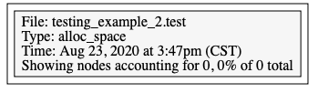</p>
<p>這時可以透過 <code>go test -mmprofilerate n</code>來改變讀取報告的頻率，當執行n個指令時，就產出報告</p>
<p>接著再查看一次產出的報告<br><figure class="highlight plain"><table><tr><td class="gutter"><pre><span class="line">1</span><br></pre></td><td class="code"><pre><span class="line">sudo go tool pprof -web testing_example_2.test mem.out</span><br></pre></td></tr></table></figure></p>
<p>可以看到每個方法詳細的記憶體消耗資訊圖</p>
<p>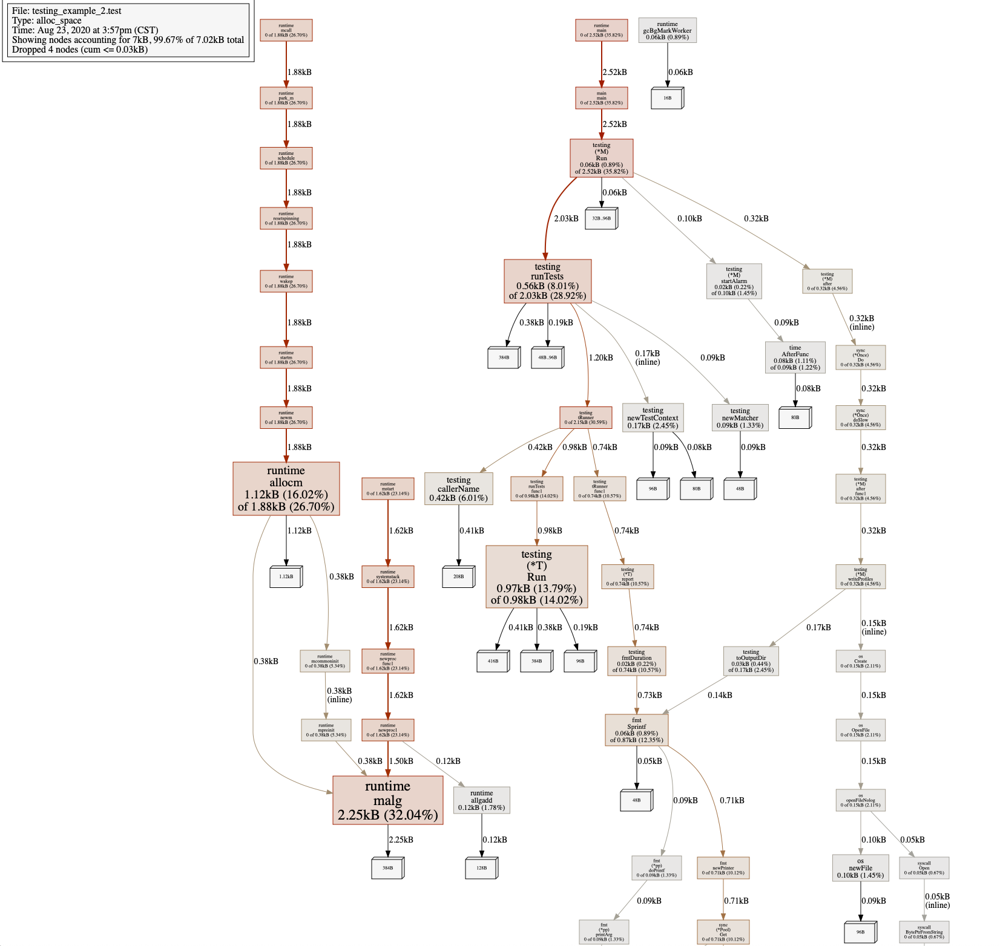</p>
<h4 id="產生CPU消費報告-go-test-cpuprofile"><a href="#產生CPU消費報告-go-test-cpuprofile" class="headerlink" title="產生CPU消費報告 go test -cpuprofile"></a>產生CPU消費報告 <code>go test -cpuprofile</code></h4><p>一樣可以產生每個方法或package使用多少的CPU關聯圖<br><figure class="highlight plain"><table><tr><td class="gutter"><pre><span class="line">1</span><br><span class="line">2</span><br><span class="line">3</span><br></pre></td><td class="code"><pre><span class="line">~/go/src via v1.15 </span><br><span class="line">➜ go test -cpuprofile cpu.out testing_example_2 </span><br><span class="line">ok      testing_example_2       0.224s</span><br></pre></td></tr></table></figure></p>
<p>產生出<code>cpu.out</code>與<code>testing_example_2.test</code>，然後後者也是透過 <code>pprof</code>檢視</p>
<p>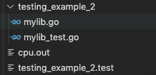</p>
<p>不過也是一樣沒看到豐富的測試資訊，因為整個測試只有執行一遍，導致pprof無法抓到有用的資訊</p>
<p>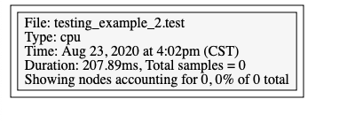</p>
<p>這時可以透過 <code>-count</code> 可以測試多次以取得足夠的CPU使用量報告</p>
<p><code>go test -cpuprofile cpu.out -count 1000000 testing_example_2</code></p>
<p>在查看一遍就會有方法呼叫的CPU消耗流程圖可以檢視了</p>
<p>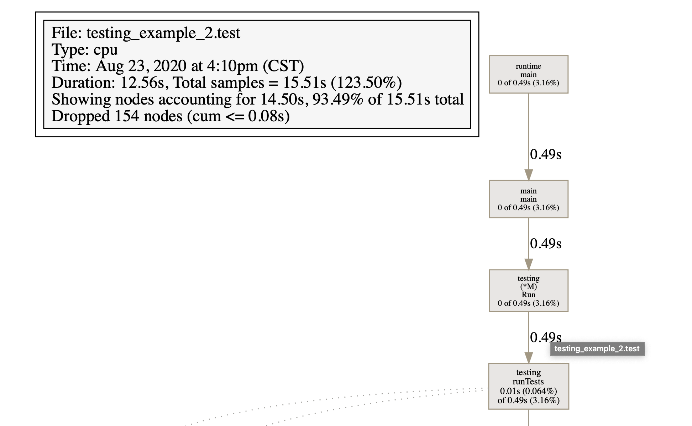</p>
<h4 id="產生程式足跡報告-go-test-trace"><a href="#產生程式足跡報告-go-test-trace" class="headerlink" title="產生程式足跡報告 go test -trace"></a>產生程式足跡報告 <code>go test -trace</code></h4><p>透過<code>-trace</code>這個flag, 可以產出許多檢視程式的執行報告</p>
<p>一樣透過 <code>go test -trace trace.out testing_example_2</code>來產生叫做 <code>trace.out</code>的報告</p>
<p>以 <code>go tool trace trace.out</code> 檢視內容</p>
<p>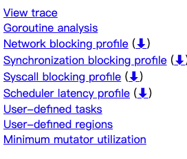</p>
<p>點開View trace可看到如下</p>
<p>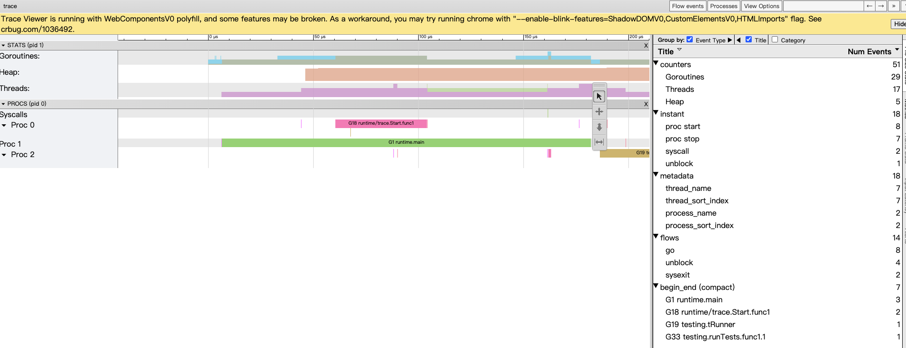</p>
<h2 id="參考資源"><a href="#參考資源" class="headerlink" title="參考資源"></a>參考資源</h2><ul>
<li><p><a href="https://golang.org/cmd/trace/" target="_blank" rel="noopener">Go-Command trace</a></p>
</li>
<li><p><a href="https://medium.com/@cep21/using-go-1-10-new-trace-features-to-debug-an-integration-test-1dc39e4e812d" target="_blank" rel="noopener">Using Go 1.10 new trace features to debug an integration test</a></p>
</li>
</ul>

    </div>
    
    <div class="post-footer">
        <div>
            
        </div>
        <div>
            
        </div>
    </div>
</article>
<div class="article-nav prev-next-wrap clearfix">
    
    <a href="/2021/02/16/go-array-slice-map/" class="pre-post btn btn-default" title="Go使用Array、Slice與Map的介紹">
        <i class="fa fa-angle-left fa-fw"></i><span class="hidden-lg">上一篇</span>
        <span class="hidden-xs">
            Go使用Array、Slice與Map的介紹</span>
    </a>
    
    
    <a href="/2021/02/15/go-package-best-practice/" class="next-post btn btn-default" title="用Golang撰寫Package的Best Practice">
        <span class="hidden-lg">下一篇</span>
        <span class="hidden-xs">
            用Golang撰寫Package的Best Practice</span><i class="fa fa-angle-right fa-fw"></i>
    </a>
    
</div>

<div id="comments">
    <div id="disqus_thread"></div>
    

<script type="text/javascript">
var disqus_config = function() {
    this.page.url = 'http://a10000005588.github.io/2021/02/15/go-cli/';
    this.page.identifier = '2021/02/15/go-cli/';
    this.page.title = 'Go CLI Playbook 學習筆記';
};

// Only if disqus_thread id is defined load the embed script
if (document.getElementById('disqus_thread')) {
    var dsq = document.createElement('script');
    var head = document.getElementsByTagName('head')[0];
    var body = document.getElementsByTagName('body')[0];

    dsq.type = 'text/javascript';
    dsq.async = true;
    dsq.setAttribute('data-timestamp', '' + +new Date());
    dsq.src = 'https://williamblog-1.disqus.com/embed.js';

    console.log('head', head);
    console.log('body', body);
    (document.getElementsByTagName('head')[0] || document.getElementsByTagName('body')[0]).appendChild(dsq);
}
  
</script>

</div>

                </main>
                
                    <aside id="article-toc" role="navigation" class="col-md-4">
    <div class="widget">
        <h3 class="title">
            Table of Contents
        </h3>
        
        <ol class="toc"><li class="toc-item toc-level-2"><a class="toc-link" href="#Go-Command-功能"><span class="toc-text">Go Command 功能</span></a><ol class="toc-child"><li class="toc-item toc-level-3"><a class="toc-link" href="#Go-Command的列表"><span class="toc-text">Go Command的列表</span></a></li><li class="toc-item toc-level-3"><a class="toc-link" href="#可透過-go-help-可看到特定command的指令"><span class="toc-text">可透過 go help 可看到特定command的指令</span></a></li></ol></li><li class="toc-item toc-level-2"><a class="toc-link" href="#go-env-查看環境變數"><span class="toc-text">go env 查看環境變數</span></a></li><li class="toc-item toc-level-2"><a class="toc-link" href="#go-run-執行程式"><span class="toc-text">go run 執行程式</span></a><ol class="toc-child"><li class="toc-item toc-level-3"><a class="toc-link" href="#透過-go-run-race來偵測是否會有race-condition的狀況發生"><span class="toc-text">透過 go run --race來偵測是否會有race condition的狀況發生</span></a></li></ol></li><li class="toc-item toc-level-2"><a class="toc-link" href="#go-build-編譯程式與其依賴"><span class="toc-text">go build 編譯程式與其依賴</span></a><ol class="toc-child"><li class="toc-item toc-level-3"><a class="toc-link" href="#使用-go-build-o定義編譯後檔案名稱"><span class="toc-text">使用 go build -o定義編譯後檔案名稱</span></a></li><li class="toc-item toc-level-3"><a class="toc-link" href="#使用-go-build-i-編譯專案的依賴"><span class="toc-text">使用 go build -i 編譯專案的依賴</span></a></li><li class="toc-item toc-level-3"><a class="toc-link" href="#參考"><span class="toc-text">參考</span></a></li></ol></li><li class="toc-item toc-level-2"><a class="toc-link" href="#go-install-編譯專案成為package"><span class="toc-text">go install 編譯專案成為package</span></a><ol class="toc-child"><li class="toc-item toc-level-3"><a class="toc-link" href="#go-install-n：顯示會進行的動作，但不會真正執行"><span class="toc-text">go install -n：顯示會進行的動作，但不會真正執行</span></a></li><li class="toc-item toc-level-3"><a class="toc-link" href="#go-install-x：顯示會進行的動作，但會真正執行"><span class="toc-text">go install -x：顯示會進行的動作，但會真正執行</span></a><ol class="toc-child"><li class="toc-item toc-level-4"><a class="toc-link" href="#其他flag"><span class="toc-text">其他flag</span></a></li></ol></li><li class="toc-item toc-level-3"><a class="toc-link" href="#產生Shared-Libraries，使用-buildmode-flag"><span class="toc-text">產生Shared Libraries，使用-buildmode flag</span></a><ol class="toc-child"><li class="toc-item toc-level-4"><a class="toc-link" href="#使用-buildmode-shared-產生供go動態連結的Shared-Libraries"><span class="toc-text">使用 -buildmode=shared 產生供go動態連結的Shared Libraries</span></a></li><li class="toc-item toc-level-4"><a class="toc-link" href="#使用-buildmode-c-archive-產生供C-language-“靜態”連結的Shared-Libraries"><span class="toc-text">使用 -buildmode=c-archive 產生供C language “靜態”連結的Shared Libraries</span></a></li><li class="toc-item toc-level-4"><a class="toc-link" href="#使用-buildmode-c-shared-產生供C-language-“動態”連結的Shared-Libraries"><span class="toc-text">使用 -buildmode=c-shared 產生供C language “動態”連結的Shared Libraries</span></a></li><li class="toc-item toc-level-4"><a class="toc-link" href="#使用-buildmode-plugin-將所有import的packages，打包成go-plugin"><span class="toc-text">使用 -buildmode=plugin 將所有import的packages，打包成go plugin</span></a></li><li class="toc-item toc-level-4"><a class="toc-link" href="#參考-1"><span class="toc-text">參考</span></a></li></ol></li></ol></li><li class="toc-item toc-level-2"><a class="toc-link" href="#go-test-撰寫單元測試Unit-Testing-Programs"><span class="toc-text">go test 撰寫單元測試Unit Testing Programs</span></a><ol class="toc-child"><li class="toc-item toc-level-3"><a class="toc-link" href="#測試需注意的規則"><span class="toc-text">測試需注意的規則</span></a></li><li class="toc-item toc-level-3"><a class="toc-link" href="#執行測試"><span class="toc-text">執行測試</span></a></li><li class="toc-item toc-level-3"><a class="toc-link" href="#執行測試的範疇"><span class="toc-text">執行測試的範疇</span></a></li><li class="toc-item toc-level-3"><a class="toc-link" href="#測試可以夾帶的參數-flags"><span class="toc-text">測試可以夾帶的參數 flags</span></a></li><li class="toc-item toc-level-3"><a class="toc-link" href="#測試的涵蓋-Code-Coverage"><span class="toc-text">測試的涵蓋 Code Coverage</span></a><ol class="toc-child"><li class="toc-item toc-level-4"><a class="toc-link" href="#透過go-test-coverpkg-指定測試程式引用的package"><span class="toc-text">透過go test -coverpkg 指定測試程式引用的package</span></a></li><li class="toc-item toc-level-4"><a class="toc-link" href="#透過go-test-coverprofile-產出測試的報告"><span class="toc-text">透過go test -coverprofile 產出測試的報告</span></a></li><li class="toc-item toc-level-4"><a class="toc-link" href="#透過-go-tool-查看測試報告"><span class="toc-text">透過 go tool 查看測試報告</span></a></li></ol></li><li class="toc-item toc-level-3"><a class="toc-link" href="#進行壓力測試-Benchmark-Testing"><span class="toc-text">進行壓力測試 Benchmark Testing</span></a><ol class="toc-child"><li class="toc-item toc-level-4"><a class="toc-link" href="#規則"><span class="toc-text">規則</span></a></li><li class="toc-item toc-level-4"><a class="toc-link" href="#指令-go-test-bench"><span class="toc-text">指令: go test -bench</span></a></li><li class="toc-item toc-level-4"><a class="toc-link" href="#指定要花多少時間做benchmark測試：-go-test-benchtime"><span class="toc-text">指定要花多少時間做benchmark測試： go test -benchtime</span></a></li><li class="toc-item toc-level-4"><a class="toc-link" href="#產生CPU消費報告-go-test-cpuprofile"><span class="toc-text">產生CPU消費報告 go test -cpuprofile</span></a></li><li class="toc-item toc-level-4"><a class="toc-link" href="#產生程式足跡報告-go-test-trace"><span class="toc-text">產生程式足跡報告 go test -trace</span></a></li></ol></li></ol></li><li class="toc-item toc-level-2"><a class="toc-link" href="#參考資源"><span class="toc-text">參考資源</span></a></li></ol>
        
    </div>
</aside>
                
            </div>
        </div>
    </section>
    <footer class="main-footer">
    <div class="container">
        <div class="row">
        </div>
    </div>
</footer>
<a id="back-to-top" class="icon-btn hide">
    <i class="fa fa-chevron-up"></i>
</a>
    <div class="copyright">
    <div class="container">
        <div class="row">
            <div class="col-sm-12">
                <div class="busuanzi">
    
</div>
            </div>
            <div class="col-sm-12">
                <span>Copyright &copy;
                    2017
                    
                </span> |
                <span>
                    Powered by <a href="//hexo.io" class="copyright-links" target="_blank" rel="nofollow">Hexo</a>
                </span> |
                <span>
                    Theme by <a href="//github.com/shenliyang/hexo-theme-snippet.git" class="copyright-links" target="_blank" rel="nofollow">Snippet</a>
                </span>
            </div>
        </div>
    </div>
</div>


<script src="/js/app.js?rev=@@hash"></script>


</body>
</html>